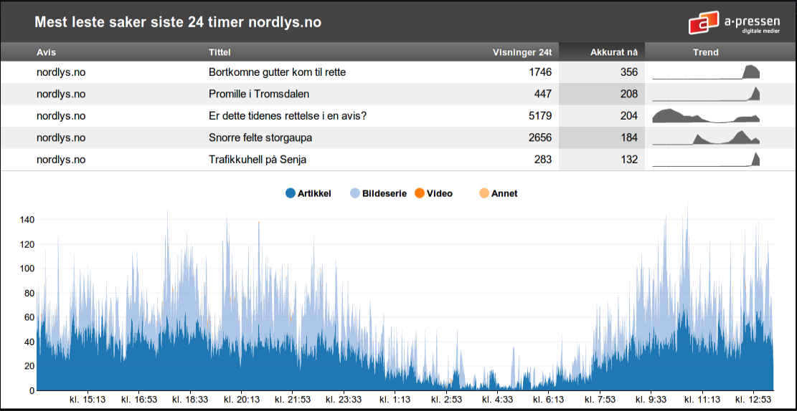

most read lists on frontpages


www.semispace.org to batch up insertsLow risk feature. Great for trying something new
NoSQL database that stores bson documents in collections
{'name':'Hans', 'salary':5000},
{'name':'Boris', 'wages':{'perhour':500}}CAP theorem: Consistency, Availability, tolerance of network Partitions
available through in-memory operationspartion tolerant through replicationeventual consistency because of eventual sync of dataset to diskGreat query and update performance (with indexes)
promises better performance than REST interfaces
db.samples.find({'name':'Hans'})DBObject queryObject = BasicDBObjectBuilder
.start("name", "Hans");
Mongo mongo = new Mongo("127.0.0.1", 27017);
DB db = mongo.getDB("samples");
DBCollection samples = db.getCollection("samples");
List result = samples.find(queryObject) one entry per page view in flat table
one Document per pageview
{ 'articleId' : 123,
'type': 'album',
'timestamp: 34523492349 }GROUP BY, SUM(), etc must be built with map/reduce. very slow
Map/Reduce over 1 mio documents takes easily several minutes.
still, it can help processing large datasets in background jobs.
Slowness partly due to spidermonkey js engine. MongoDB plans switch to google's V8.
...that makes SUM() and GROUP BY() obsolete
counter fields in nested time-unit documents
$inc to keep aggregation fields updated
1 mio -> 30k
{ "articleId" : 222,
"day" : {
"count" : 123,
"hours" : {
"1331398800000" : {
"count" : 99,
"minutes" : {
"1331401920000" : {
"count" : 23
}
}
}
}
},
"last15minutes" : 23,
"last180minutes" : 101
}articles documents as seenminutes documents{ "time" : {
"ts" : 1331407680000,
"year" : 2012,
"month" : 2,
"day" : 10,
"hour" : 20,
"minute" : 28
},
"count" : 1677
}db.samples.find({'name': 'Hans'}).explain()
{
"cursor" : "BasicCursor",
"nscanned" : 1000000,
"nscannedObjects" : 1000000,
"n" : 500000,
"millis" : 389,
"nYields" : 0,
"nChunkSkips" : 0,
"isMultiKey" : false,
"indexOnly" : false,
"indexBounds" : {
}
}ascending : db.samples.ensureIndex('name': 1)
descending: db.samples.ensureIndex('name': -1)
db.samples.update(
{'lastName' : 'Nordmann'},
{ $inc: { salary : 100 } }
)needs index on lastName
http://localhost:28017
logs all queries that take more than 100ms
percentage shows how long the global write lock was active
/
#